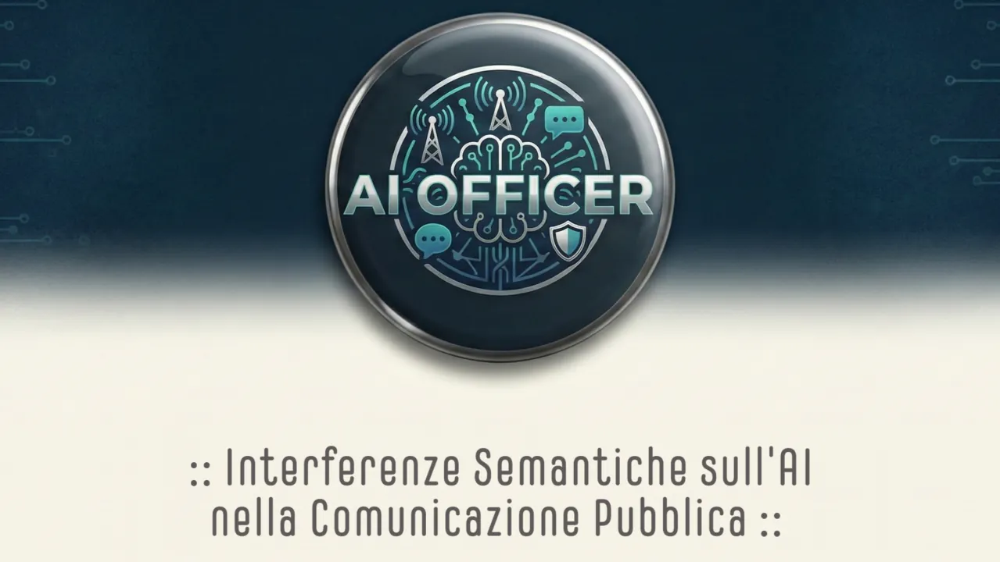

NewsLetter #1
Comunicazione Pubblica: l'innovazione che abbiamo e quella che ci serve
:: Interferenze semantiche sull’AI nella Comunicazione Pubblica ::

Due storie parallele sulla trasformazione digitale della Pubblica Amministrazione italiana. La prima: la PA avrebbe bisogno di assumere almeno 16.000 Social Media Manager, finalmente riconoscendo che “essere sui social” richiede competenze professionali dedicate e specialistiche. La seconda: AGID ha fotografato 120 progetti di intelligenza artificiale nelle Amministrazioni Pubbliche, “descrivendo” che il 60% non applica standard di qualità ai dati.
Due facce della stessa medaglia. Da un lato, innovazione annunciata con grandi numeri. Dall’altro, innovazione già in corso ma costruita su fondamenta fragili.
La domanda che mi sono fatto è semplice: stiamo innovando davvero, o stiamo solo accelerando? Perché assumere 16.000 professionisti per un incarico specialistico è sempre un’ottima notizia nel panorama della PA, ma se poi gli strumenti digitali che useranno sono “viziati” da scelte burocratiche che non aiutano a emanciparsi, come il caso dei “dati NON VERIFICATI” con i quali si addestra l’Intelligenza artificiale, rischiamo di costruire un edificio bellissimo su sabbie mobili.
Questa newsletter nasce per introdurre piccole interferenze semantiche in questo dibattito. Non per cper la critica fine a se stessa o ad un LIKE su Linkedin, ma per portare domande scomode dove servono. Come quelle che si fanno (o si dovrebbero fare) nelle riunioni strategiche sull’AI nella PA: “Scusate, ma ci siamo chiesti se questi dati rappresentano davvero tutti i cittadini?” oppure “Bello il progetto, ma questi numeri dicono qualcos’altro: abbiamo fatto una verifica?”
Benvenuti alla prima uscita. ...E partiamo dai numeri.
Approfondimento indagine AGID: quel evidente 60% che nessuno commenta
“L’enigna dell’Algoritmo”: una presenza inquietante, versione “Giallo”, vista da Gemini.
A giugno 2025, AGID - Agenzia per l’Italia Digitale ha pubblicato la prima indagine sistematica sull’intelligenza artificiale nella Pubblica Amministrazione taliana. 120 progetti censiti, 45 amministrazioni coinvolte, obiettivo dichiarato: più efficienza operativa e servizi migliori ai cittadini.
Il dato più visibile? Oltre il 60% di questi progetti prevede chatbot e assistenti virtuali. Tecnicamente impressionante. Ma c’è un altro 60% nel rapporto, molto meno celebrato: solo il 40% dei progetti applica standard di qualità dei dati (ISO/IEC 25012). Il restante 60% addestra sistemi di intelligenza artificiale senza verificare accuratezza, completezza, coerenza delle informazioni.
Facciamo un passo indietro. Quando addestriamo un algoritmo, gli stiamo essenzialmente insegnando a ragionare sui nostri dati storici. Se quei dati sono incompleti, distorti, o semplicemente non rappresentano la varietà reale dei cittadini che dovremmo servire, perchè magari raccolti con tecniche desuete e non consapevoli dell’esistenza di bias, l’algoritmo impara a replicare i limiti insiti negli stessi dati. E lo fa a velocità industriale.
L’indagine AGID ci dice anche che la maggior parte di questi progetti usa prevalentemente banche dati interne alle amministrazioni. Tradotto: stiamo insegnando all’AI a ragionare sui nostri documenti storici, sulle nostre procedure consolidate, sul nostro linguaggio burocratico. Senza chiederci se quei dati rappresentano davvero la complessità del Paese attuale.
Il rischio non è solo tecnico ma è sociale.
Un chatbot addestrato su dati parziali o viziati da prassi del passato non “migliora” il servizio pubblico. Automatizza le sue criticità. Quando un cittadino fragile - magari anziano, con bassa scolarità, poca empatia con la tecnologia, o semplicemente in un momento di difficoltà - si ritrova davanti a un assistente virtuale che “non capisce” la sua richiesta, cosa succede? Non trova un operatore umano che legge tra le righe, coglie il bisogno reale, adatta la risposta. Trova un muro digitale.
C’è un altro dato nel rapporto AGID che vale la pena sottolineare: solo il 20% dei progetti ha definito KPI per misurare l’impatto. Stiamo innovando senza sapere dove vogliamo arrivare, senza strumenti per capire se funziona davvero. La lettura dell’impatto del nostro intervento sarebbe almeno auspicabile, magari con alcuni basilari Indici di Valutazione.
E poi c’è il tema della dipendenza esterna. Il rapporto evidenzia che circa il 50% delle attività progettuali viene affidato a società di consulenza e informatica esterne, per mancanza di competenze interne. Questo genera il rischio di vendor lock-in - ovvero quando cambiare fornitore costa più che restare prigionieri - e di acquisire soluzioni non pienamente aderenti alle esigenze specifiche delle Amministrazioni.
L’innovazione tecnologica senza qualità dei dati, senza rappresentatività, senza autonomia strategica non avvicina le istituzioni ai cittadini. Le allontana.
La domanda resta aperta: vogliamo un’AI che efficenta, o un’AI che funziona per tutti?
Sguardo laterale: il capitale semantico e la PA
Questa settimana Luciano Floridi ha parlato di “capitale semantico” a Orbits 2025. Il concetto è affascinante e profondamente rilevante per chi si occupa di AI nella Pubblica Amministrazione.
Se i dati sono il nuovo petrolio (metafora abusata ma efficace), il capitale semantico è la capacità di estrarre significato da quei dati. Non basta avere terabyte di informazioni. Serve la capacità di interpretarle, contestualizzarle, trasformarle in conoscenza utilizzabile per decisioni migliori. (Qui il Post con l’intervento)
Questo collegamento con i dati AGID è immediato e inquietante. Una PA che addestra algoritmi su dati non verificati, senza standard di qualità, senza attenzione alla rappresentatività, non sta solo sprecando risorse tecniche. Sta dilapidando capitale semantico.
Peggio: sta creando un’illusione di conoscenza. Un chatbot che risponde velocemente ma in modo inadeguato non è un miglioramento del servizio, è un degrado mascherato da efficienza. Il cittadino pensa di interagire con un sistema “intelligente”, ma quel sistema sta operando su una comprensione parziale e distorta della realtà.
Per i comunicatori pubblici - e per chi dovrà ricoprire ruoli di AI Officer nelle amministrazioni - questo significa una responsabilità enorme: presidiare la qualità semantica degli strumenti che utilizziamo. Non basta chiedersi “funziona tecnicamente?”. Bisogna chiedersi “cosa sta imparando? Da chi? Cosa insegna? E chi rimane escluso da questa comprensione?”
Il capitale semantico non si accumula automaticamente con la raccolta di dati come una “raccolta di bollini premio”. Si costruisce con scelte consapevoli, con governance intelligente, con la capacità di mettere in discussione le nostre stesse fonti informative.
:: Radar settimanale: cosa tenere d’occhio! ::
📚 Fabiano Catania sulla formazione dei Social Media Manager. Fabiano Catania ha condiviso un’interessante riflessione sulla formazione che sta facendo con i social media manager della PA. Vale la pena seguire il suo lavoro perché tocca il tema centrale: non basta creare posizioni, serve formare le persone che le occuperanno. La Legge 69/2025 aprirà la porta a 16.000 professionisti, ma se non investiamo nella loro crescita continua, rischiamo di avere ruoli senza sostanza.
🎬 La storia di VLC: quando la tecnologia era liberazione MCC – Marco Camisani Calzolari 🇺🇸 Page ha raccontato la storia di VLC media player e del suo creatore che ha rifiutato milioni per mantenere il software gratuito e open source. Non è solo un bell’aneddoto. È il racconto di un momento storico in cui Internet incarnava un ideale sociale preciso: la tecnologia come strumento di emancipazione democratica attraverso la conoscenza condivisa e gratuita.
Questo ideale spiega moltissimo dell’entusiasmo contemporaneo per l’AI, specialmente nelle sue versioni gratuite. Ma nella PA dobbiamo stare attenti: la gratuità apparente di alcuni strumenti non deve nascondere i costi nascosti del vendor lock-in o della perdita di sovranità tecnologica. L’ideale di liberazione attraverso la tecnologia resta valido, ma richiede governance intelligente.
🎓 Certificazione UNI 11483 per comunicatori Fabio A. Famoso (CX e Digital Manager Comune di Milano) sta promuovendo la certificazione professionale UNI 11483 per Comunicatori. Per chi lavora o vuole lavorare nella comunicazione pubblica, è un elemento concreto di professionalizzazione. Non solo titoli accademici, ma riconoscimento delle competenze operative.
I miei contenuti della settimana
Questa settimana ho pubblicato due post LinkedIn che approfondiscono i temi trattati:
📱 16.000 Social Media Manager in arrivo nella PA? Sul riconoscimento ufficiale della figura professionale tramite Legge 69/2025 e sulla distinzione importante rispetto ai ruoli regolamentati dalla Legge 150/2000. → Leggi il post completo
📊 120 progetti AI nella PA: i numeri che fanno riflettere Analisi dei dati AGID su qualità dei dati, chatbot, e il rischio di disumanizzazione dei servizi pubblici. → Leggi il post completo
💬 La tua interferenza della settimana Nel post sui dati AGID - Agenzia per l’Italia Digitale ho lanciato una sfida: trova il dato che ti stupisce di più nel rapporto e commentalo. L’ho fatto perché credo che l’indagine meriti una lettura collettiva, non solo dall’alto. Se non l’hai ancora fatto, scarica il rapporto completo e dimmi cosa ti ha colpito.
Alla prossima interferenza
Questa newsletter uscirà ogni inizio Settimana. Non per aggiungere rumore, ma per introdurre piccole domande necessarie nel dibattito sull’AI nella Comunicazione Pubblica italiana.
Se questo primo numero ti è stato utile, condividilo con un collega che lavora in PA o che si occupa di innovazione digitale. E se hai temi che vorresti vedere approfonditi, scrivimi direttamente.
Ci sentiamo alla prossima AI OFFICER :: NEWSLETTER #1 :: Interferenze semantiche sull’AI nella Comunicazione Pubblica ::
P.S. Fammi sapere cosa ne pensi del tempo di lettura e dei contenuti!
Martin Iglesias Giornalista Professionista | Specialista AI nella Comunicazione Pubblica